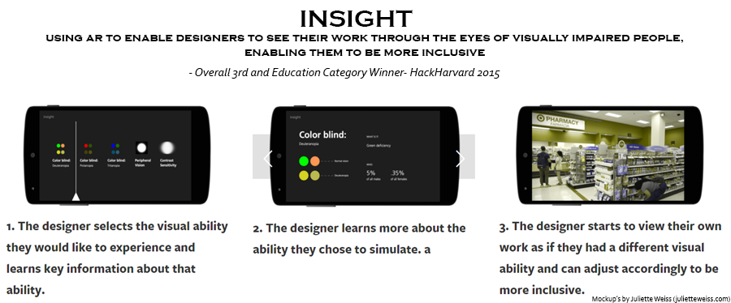
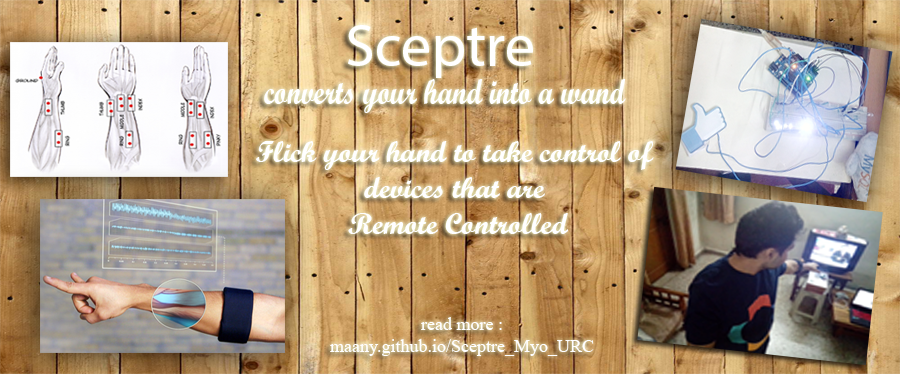

Hi! I am a motivated and inquisitive Electronics and Communication Engineering Junior at National Institue of Technology, Delhi. I have a strong tech stack(Java, Web, Android, Game Engine, Hardware development) and rich project experience including Google Summer of Code 2014, 2015, FOSS contributions, engineering/desiging API's for software firms/ startups and a couple of major hackathons (Education Category winner at HackHarvard 2015). I like to learn new tech and build projects that show why technology is awesome.
Recent Activities
Latest Projects
Insight
A Google Cardboard/Android app that simulates color blindness to give designers/architects an insight into how their work is perceived by visually challenged people and hence be more accommodative.

Releasing Soon
The app was built during HackHarvard 2015 and was adjudged the winner in the education category (3rd Overall).
Sceptre : Gesture based Univerval Remote Controller
(Pitched to Shri Narendra Modi, the Prime Minister of India in January 2016)

New
Spectre is a wearable that allows you to control any remote controlled devices via custom hand gestures. It tracks the EMG activity of your arm coupled with an IMU device to detect gestures. It also consists of an IR transceiver unit that can detect and reproduce signals in the IR spectrum. Here's the motivation behind the project
- We do not use all the buttons on a remote. There are few favorites that we use all the time.( e.g. pump up the volume or power it off when mom's around)
- The interface for these remotes are decided by the manufacturers and may not always be user-friendly. Especially for the elder people. Raise your hand again if you had to demo any device to your grandparents and they mocked technology!
- Every time we buy a TV/ Audio system/ AC etc, we are also buying a remote that works with only that device.
- It would be cool to never have to buy a remote again, no more searching more them before your favouite shows or buying batteries every few months. Just put on Sceptre and start controlling your devices!

OAuth2 module - OpenMRSOpen Source
An OpenMRS module that converts any OpenMRS installation into an OAuth2 provider. It was built during Google Summer of Code 2015 and supports all 4 grant types (Authorization Code, Implicit, Resource Owner and Client Credentials). The module integrates Spring Security and Spring Security OAuth projects into OpenMRS

Virtual Reality Desk - PennApps XII
This project was buit during PennApps XII, the bi-annual hackathon of University of Pennsylvania, Philadelphia. It uses an Oculus Rift to project a virtual office environment in which you navigate by using your arm as a joystick (interfaced with Thalmic Myo). The virtual office is linked to the outer world via third party API's to implement flow of information between virtual and the physical world. So you can use services like Gmail, GCalendar in the virtual environment. The project os a proof of concept for the idea to provide a virtual space where people in remote locations can gather and work.

Cinematic Editor - jMonkeyEngine
The cinematic editor provides a GUI toolkit to game developers to quickly create game trailers and in-game cut-scenes. It provides timeline, events, curve editing for game objects. Good-bye to the days of using screen capture for trailers.
ThunderBolt - NIT Delhi
As a freshman, I noticed my school's librarian still using pen and paper for record keeping. So,I built a fully-fledged lightweight library management system called Thunderbolt. It is hosted by a central server to which desktop and web clients can connect. It was tested in the school's library for few months before we had a dedicated Insitute Management System
Other Projects
TFT-Touch Screen UI Framework Open Source
A lightweight UI framework written in C++. It reduces the task of creating Menu's for Touch Screen displays to a few lines of code. The framework is compatible with all microcontroller/ microprocessors that can compile C++ code(tested on Arduino/ Raspberry Pi) and every TFT touch screen in the market that has a C++ library. It provides callbacks to insert platform specific code and manages all menu's/ menu elements/ rendering/ navigation/ memory comsumed by program. The framework was used in a Govt. of India project during my summer internship at DRDO
Film and Animation Developers Factory Open Source
This project was developed for CEIIT. It is a SaaS app that allows film-enthusiasts to connect and collaborate on projects. Only some part of the code written by me is public.Below is the code for a framework for that installs modules on a web-application without reloading the server.
Work Experience
Manager, Developer Tools - OpenMRS (August 2015 - Present)
- Guiding the design, implementation, and support of tools used by OpenMRS developers to assist in their work. My work ensures that developers have access to the resources they need to be successful.
- As new requirements are discovered, I help plan improvements to our developer tools or work to implement new tools, with the assistance of one or more additional volunteers.
- I am working closely with the Infrastructure Team for OpenMRS Inc. I am also responsible for maintenance and administration of staging and production servers hosting Atlassian JIRA, Atlassian Confluence, Atlassian Crowd, Sonatype Nexus repository, OpenLDAP, Github repositories and module distribution systems which are essential for day to day development activities of the organization
Release Manager, Platform 2.0 - OpenMRS (August 2015 - Present)
Managing the release of the second major release of OpenMRS Platform that comes out over 8 years. Major milestones include :
- Drove removal of 8 years of deprecated API code, migration to REST’ful web services, upgrading Platform to latest tech stack (Java8, Spring 4.x, Hibernate 4.x)
- Organize sprints/ issue management and outreach activities to maximize number of developers contributing to Platform 2.0
- Reviewing current process to introduce performance metrics and drive continuous service improvement and implement lean improvements throughout release process.
Summer Research Intern - Defense Research and Development Organization (DRDO, Govt of India) (June 2015 - August 2015)
- Implementing Pattern Recognition for Selective Odor Detection with Gas Sensor Arrays and developing Carbon Nano Tube (CNT) based gas sensors to detect 8 standard gases
- Enhancing Neural Genetic Classification Algorithm (NCGA), a combination of Genetic Algorithms and Artificial Neural Networks, to more accurately detect gases within a mixture with help of Discrete Wavelet Transform
Google Summer of Code Student 2015 Developer - OpenMRS (May 2015 - August 2015)
- Developing a module for OpenMRS Inc, a global leader in open technologies for healthcare IT, to implement OAuth2 support for OpenMRS Web Services and convert OpenMRS installations into OAuth2 providers
- Worked on Fast Health Interperobility Resources (FHIR) module and added features to delete and update Location/ Encounter and Person Resources via REST calls based on FHIR DTSU2 specifications
- Fixed bugs in OpenMRS-Core platform 1.12 and introduced custom data types
- Agile development using Atlassian JIRA for issue tracking and project management.
- Programming Skills Used: Hibernate 4, Spring MVC, Spring Security, Spring Transactions. //TODO add resources
Google Summer of Code 2014 Student Developer - jMonkeyEngine (May 2014 - August 2014)
- Created a Cinematics and Animation Editor plugin, a JavaFX UI with a smoothly interpolated timeline and advanced curve editing, to allow developers to control and manipulate game objects allowing dynamic cut scenes and in-game sequencing
- Utilized knowledge of Adobe and Autodesk suites, Rich Client Platforms (Netbeans) and jMonkeyEngine’s graphic pipeline to incorporate “best of” features into the Cinematics Editor and Viewer that displays the pre-rendered cinematic in sync with the timeline state
- Provided the Editor with external hooks and an API for seamless integration into the jMonkeyEngine
- Showed initiative by creating a prototype even before GSoC started. Followed Agile Development cycle for the project with biweekly sprints. Created a “Request a Feature” form for real-time user feedback
- Received extremely positive performance reviews by jMonkey’s Core Developers and community //TODO add resources
Software Development Engineer (Android, Cloud, J2EE) - International Society of Software and Advanced Computing (November 2014 - May2015)
- Design REST'ful Services and implement them via a Java API shared by all the client types (web, desktop, handheld). Special emphasis on reducing number of API calls for performing different tasks while ensuring security and performance of system are not compomised and can adapt to heavy overheads
- Designed a modular architecture to build a robust system with real-time processing capabilities
- Programming Skills Used: Android, Spring Framework, Hibernate, Mongo DB, Amazon EC2
Web Developer - Centre of Excellence in Information Technology (January 2014 - May 2014)
- Developed an efficient algorithm for a SaaS app, “Film and Animation Development Factory”, to simplify film-making process by connecting film developers with skilled crew and actors
- Designed the server-side logic to enhance location based search and response to resource requirements
- Developed a modified version of the Publisher-Subscriber Design Pattern to enable pluggable functionality (widgets) that can be installed/removed at runtime
- Programming Skills Used: Struts 2.0, Hibernate 3.0, MySQL, HTML 5, CSS 3.0, jQuery, JavaScript
My GitHub
You can embed your GitHub contribution graph calendar using IonicaBizau's GitHub Calendar widget.
You can also embed your GitHub activities using Casey Scarborough's GitHub Activity Stream widget.